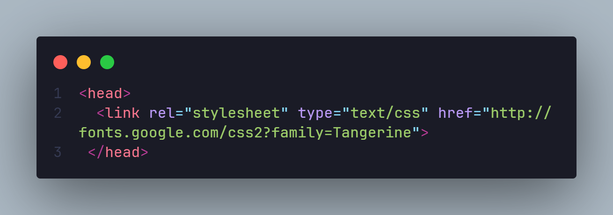
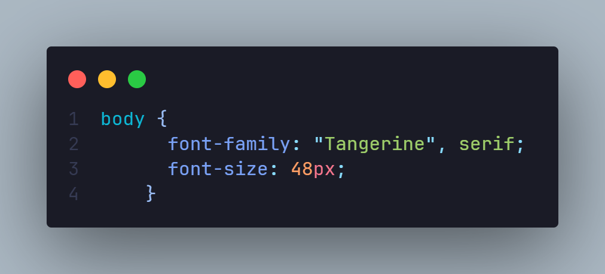

The font-size Property
The font-size property can be set for any HTML tag (even if it would not normally contain textual content like br). It can be assigned a variety of absolute, relative, or length size parameters.
An element will inherit the font-size of its parent unless you override it. This is especially important when you specify relative sizes.
Absolute font sizing keywords
several absolute font-sizing keywords are available. the font size is determined from a browser preset and the element will not inherit its parent’s size.
- font-size: xx-small;
- font-size: x-small;
- font-size: small;
- font-size: medium;
- font-size: large;
- font-size: x-large;
- font-size: xx-large;
Relative Font Sizing Keywords
Two relative font-sizing keywords are available. The font is sized according to its parent element:
- font-size: smaller;
- font-size: larger;
For example, if the parent has a font size of ‘medium’, a value of ‘larger’ will set the element to ‘large’. Other font units are normally altered by a factor of around 1.2 but, again, there is no standard and browser results will differ.
Absolute Lengths
The font-size property can be assigned an absolute length:
- mm: millimeters, e.g. 10mm.
- cm: centimeters, e.g. 1cm ( = 10mm)
- in: inches, e.g. 0.39in ( ~= 10mm).
- pt: point, where 1pt is generally assumed to be 1/72 inch e.g. 12pt
- pc: pica, where 1pc is 12pt
- px: pixel, e.g. 14px
In general, there are issues with all these measurement units. Millimeters, centimeters and inches are inaccurate for a screen-based medium. Points and picas are unreliable since systems can use different dpisettings. Pixel appears to be the most suitable, but it can lead to accessibility issues because the text cannot be resized in IE.
Relative Lengths
The font-size property can be assigned a unit that it relative to its parent’s font size:
- em: 1em is equivalent to the current font size, so 2em is twice as large
- %: 100% is equivalent to the current font size, so 200% is twice as large.
- ex: 1ex is equivalent to the height of the letter ‘x’ in the current font. Few developers use ‘ex’, but it can be useful in some situations where you need fine-grained font sizes, e.g. 1ex rather than 0.525em.
Percentage and ‘em’ sizes are equivalent, e.g. 50% = 0.5em, 100% = 1em, 120% = 1.2em, etc. Some browsers exhibit subtle differences but it’s rarely a major problem. If you want to save every byte, you could choose the shortest definition, i.e. 50% is shorter than 0.5em and 1em is shorter than 100%.
Text Sizing and Page Zooming
This is where additional complexity creeps in. Most browsers allow the user to:
- increase or decrease the base text size (image dimensions are not changed)
- zoom the page in or out so all the text and graphics change accordingly or allow both text sizing and page zooming.
Just to complicate matters further, Internet Explorer does not allow text resizing on elements which have a font size defined in pixels (px).
Tips
If you’re a designer moving to the web from a print background, it’s disconcerting to give the user that much power. Your design could be ruined by a user zooming in 200% but reducing the text size to 50%. And no there is nothing you can do to prevent it. Nor should you.
CSS Font Sizing Recommendations
The general consensus is that ‘em’ or ‘%’ is the best solution in most situations. Fonts can be finely scaled relative to each other and browser text sizing is supported. I would also recommend using a percentage font-size on the body tag; it results in better text-sizing in some older browsers.
There are a couple of other recommendations I would suggest when you’re developing a site:
- reset the font size and page zoom to their default values in all your browsers before testing (it’s caught me out a few times!)
- try reasonable combinations of text sizing and page zooming in a variety of browsers to ensure the text remains readable.
Web font embedding services
Google Web Fonts (GWF)
Google Web Fonts (GWF) or Typekit are systems which allow the use of fonts hosted on their servers. GWF is free to use, does not require you to have an account, and has no limit on traffic or domains unlike Typekit. Typekit sets the cost of the service according to the number of domains in which the font is used, or the site’s monthly traffic. One of the most valued characteristics of GWF is the option to download a desktop version of the fonts for use in the project design phase.
Implementation
- Choose a font. You can add it to your collection or use “quick-use” to generate the code and options for that font.
- Copy and paste the code generated into your "Head"
- The font is now accessible in your CSS code 
Here you can consult a extended manual for styles, script subsets, and using multiple fonts.
Top recommended fonts from Google Web Fonts. You will find many unfavorable reviews about the quality of GWF’s fonts and the amateur nature of many typefaces. We must remember that Google Web Fonts is a collaborative open source project, but many people think still there should be a higher level of quality control.
- Open Sans
- Josefin Slab
- Arvo
- Lato
- Vollkorn
- Abril Fatfac
- Ubuntu
- PT Sans + PT Serif
- Old Standard TT
- Droid Sans
Embedding fonts using the @font-face rule
Fonts are hosted on the user’s server independently of external services. @font-face was a deprecated CSS2 rule that has been re-introduced in CSS3 specifications and is supported by almost all modern browsers. A web font is a customized font which is supported by different browsers and comes in formats such as TTF, WOFF, EOT and SVG.
There are many fonts available for @font-face embedding, but we are going to bring you a selection of the web fonts available on FONT SQUIRREL which are free to use and include prepackaged @font-face kits with the required formats, CSS and HTML code.
Font Squirrel also offers the fantastic “@Font-Face Generator” tool, which can convert your desktop font into the appropriate format so you can use it as a web font. Implementation of web fonts with the @font-face rule.
- Select your favorite font from Font Squirrel.
- Download the @font-face kit and test the sample code in stylesheet.css and demo.html files. All the font formats must be uploaded to your server.